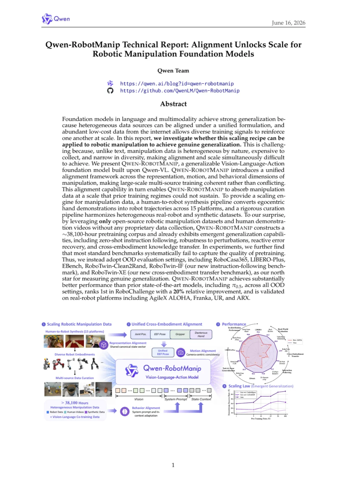
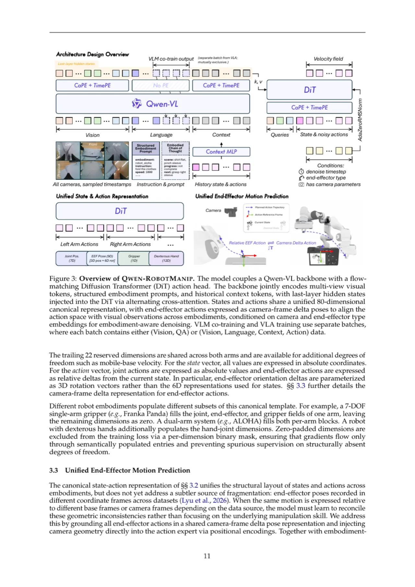
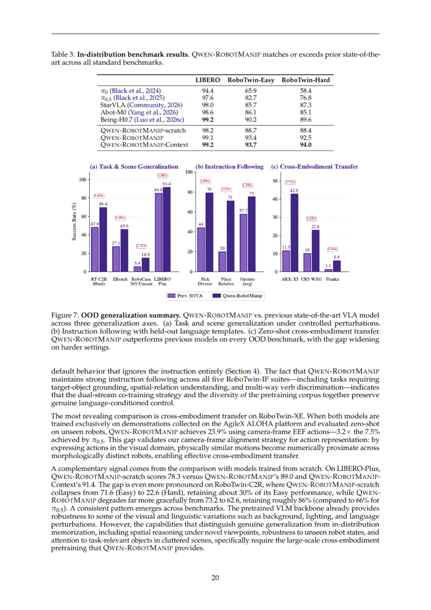
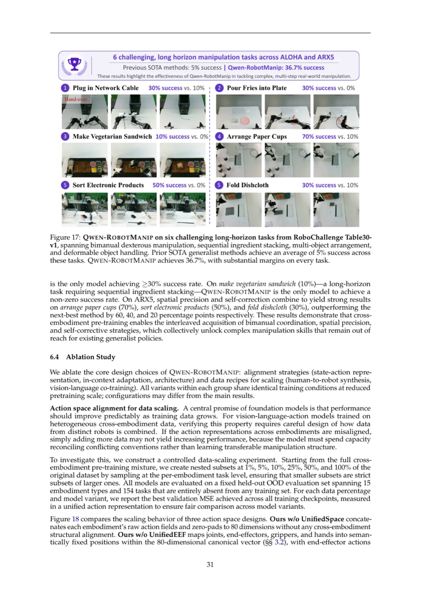

现有 VLA 模型在标准基准上表现良好，但在真正 OOD 场景下严重退化——根本原因在于异构机器人数据无法被直接对齐后统一缩放。Qwen-RobotManip 以「先对齐、后扩展」为核心原则，在表示、运动、行为三个维度引入统一对齐框架，基于 ~38,100 小时全开源数据构建可泛化 VLA 基础模型，在多项 OOD 基准上大幅超越 π₀.₅ 等当前最优方法。
语言和多模态领域的基础模型因「异构数据来源可在统一公式下对齐，且互联网大量低成本数据允许多样化训练信号相互强化」而实现了强泛化。但机器人操作数据天然异构、昂贵且多样性有限，使得对齐与规模化难以同时实现。
「We investigate whether this scaling recipe can be applied to robotic manipulation to achieve genuine generalization.」——对齐是数据规模化的先决条件，而非独立的工程选择。

在标准 in-distribution 基准（LIBERO、RoboTwin）上，从零训练的模型（StarVLA、Ours-scratch）可媲美甚至超过大规模预训练模型（π₀、π₀.₅）。这是因为训练与评测共享同一分布，高准确率可通过记忆视觉-行为模式实现，而非真实泛化能力。 相比之下，在 OOD 基准（LIBERO-Plus、RoboTwin-Clean2Rand）上，差距显著拉开：π₀.₅ 大幅优于从零训练的模型，随扰动难度上升差距进一步加大。因此 Qwen-RobotManip 以 OOD 评测为首要指标。
Qwen-RobotManip 围绕「对齐优先」原则，在数据、模型、训练三个层面协同设计：统一 80 维规范状态-动作表示、相机坐标系 delta 姿态运动对齐、结构化体态提示与上下文内策略自适应，配合 Human-to-Robot 合成流水线实现大规模多源训练。

引入 80 维规范向量表示：两个 29 维单臂 block（各含 Joint positions 7d、EEF pose 9d、Gripper state 1d、Dexterous hand joints 12d）+ 22 维预留维度。不同形态（单臂 Franka、双臂 ALOHA、人形机器人）各自填充对应子集，未激活维度通过 per-dimension binary mask 排除在训练损失之外，避免 "幽灵" 监督干扰梯度。
不同数据集的 end-effector 姿态在不同坐标系下记录，导致即使是相同物理运动，数值上也可能截然不同。 通过将 EEF delta 动作表示为相机坐标系 delta pose（camera-frame delta pose），视觉上相似的运动在动作空间中数值也相近，直接对齐视觉观察空间与动作空间，促进跨形态迁移。 同时通过 Camera-aware Positional Encoding (CaPE) 将相机外参注入 DiT cross-attention，使动作头能够推理相机几何关系。
每步推断时提供结构化文本提示，字段包括：embodiment（机器人平台标识）、instruction（任务描述）、speed（episode 长度 bin，500 步为单位）、fps（时间采样率）、camera view direction（arm side / opposite side）。为提高对缺失信息的鲁棒性，训练中以 15% 概率随机丢弃 embodiment、speed、fps 字段。
受大语言模型 in-context learning 启发，Qwen-RobotManip 配备上下文策略自适应机制：将同一 episode 内近期执行历史（observation-action chunk 对）作为结构化上下文 token 序列注入策略，无需更新参数即可在部署时实现行为自适应。采用随机上下文采样（Stochastic context sampling）防止模型退化为简单的"复制近期动作"捷径。
自我中心人手演示与机器人数据在形态和视觉域之间存在显著差距。合成流水线分两阶段：
k_vf = 0.7·k_index + 0.3·k_middle，EEF 位置取拇指与虚拟指尖中点，夹爪宽度为欧氏距离。应用 Savitzky-Golay 滤波平滑轨迹，高斯加权 SLERP 平滑方向。~1,933 小时自我中心数据渲染为 15 种双臂机器人形态（Panda、UR5e、ARX-L5、xArm7、IIWA、Kinova Gen3 等），共约 24,808 小时合成演示。
以 9:1 的机器人数据与 VL 数据比例同步训练 VLA 流和 VLM 流，防止动作预测压力导致 VLM 主干感知与推理能力退化。VL 数据包括通用视觉理解、空间感知与推理、OCR、多模态专业知识、指令跟随，以及专门合成的体态中心 VL 数据（Embodied Chain-of-Thought、自我中心视频理解、2D 轨迹预测）。
在仿真 OOD 基准（LIBERO-Plus、RoboTwin-Clean2Rand、RoboCasa365、EBench、RoboTwin-IF、RoboTwin-XE）与真实机器人平台（AgileX CobotMagic ALOHA、ARX ALOHA、UR5、Franka）上进行系统评测，以 π₀（Black et al., 2024）和 π₀.₅（Black et al., 2025）为主要基线。
| 方法 | LIBERO | RoboTwin-Easy | RoboTwin-Hard |
|---|---|---|---|
| π₀ (Black et al., 2024) | 94.4 | 65.9 | 58.4 |
| π₀.₅ (Black et al., 2025) | 97.6 | 82.7 | 76.8 |
| StarVLA (Community, 2026) | 98.0 | 85.7 | 87.3 |
| Abot-M0 (Yang et al., 2026) | 98.6 | 86.1 | 85.1 |
| Being-H0.7 (Luo et al., 2026c) | 99.2 | 90.2 | 89.6 |
| Qwen-RobotManip | 99.1 | 93.4 | 92.5 |
| Qwen-RobotManip-Context | 99.2 | 93.7 | 94.0 |

| 基准（OOD） | π₀.₅ (SOTA) | Qwen-RobotManip | Qwen-RobotManip-Context |
|---|---|---|---|
| LIBERO-Plus (Total) | 84.4 | 89.0 | 91.4 |
| RoboTwin-C2R (Hard) | 47.9 | 69.4 | 69.4 |
| RoboCasa365 (Total) | 16.9 | 35.9 | 33.8 |
| EBench (Overall SR) | 27.1 | 45.6 | 43.6 |
| RoboTwin-IF (Avg.) | 49.6 | 72.2 | 72.0 |
| RoboTwin-XE (Avg., eef) | 7.5 | 23.9 | — |

在 CobotMagic ALOHA 平台上，ID 基准平均成功率 88.6%（π₀.₅ 42.9%，StarVLA 20.0%），OOD 基准 87.5%（π₀.₅ 37.5%，StarVLA 0.0%）。在 ARX ALOHA 上，少样本自适应（130 次演示）四项任务 Qwen-RobotManip 胜出；跨形态技能迁移（4 项新任务，零 ARX 演示）达 55.0%，而消融基线（w/o UnifiedSpace 7.5%、w/o UnifiedEEF 12.5%）几乎失败，验证统一对齐的关键作用。
提交 Qwen-RobotManip 至 Table30-v1 Generalist Track（30 项操作任务，跨 4 个实体形态），成功率 45%，过程分 59.83，超越 DM0_generalist（37% / 48.43 分）8 个百分点，排名第一，相对提升约 20%。在双臂协调任务（8 项）上平均 40.0%，在拾放任务（12 项）上平均 63.3%，均大幅领先所有基线。
数据规模化曲线（Figure 18）显示：具有统一表示的变体（Ours、Ours w/o UnifiedEEF）在 1%–100% 训练数据区间内验证 MSE 近似对数线性下降，呈清晰数据规模化律；而 Ours w/o UnifiedSpace 曲线不稳定，EEF 动作预测 MSE 显著更高。验证了「对齐是规模化的前提」这一核心命题。
上下文自适应消融（Table 15）：无上下文基线（Structure Prompt 配置）Hard 平均 65.9%；添加上下文（10 denoising steps）提升至 70.9%（+5.0 点）；20 steps 无额外收益（71.0%）。随机上下文采样对于防止"复制近期动作"退化至关重要。
「We do note one practical limitation observed in real-robot deployment: at the start of an episode, the context consists entirely of zero-padded placeholders, and the model, having learned to condition on quiescent history, tends to hesitate before initiating motion.」为此同时发布有/无上下文两种变体供用户按需选择。
在 CobotMagic ALOHA ID 基准中，yellow-disc-insertion（精确插盘）成功率仅 2/5，作者指出「highlighting the difficulty of precise insertion on real hardware」。高精度接触丰富型操作仍是挑战。
~24,808 小时合成数据来自人手视频经 Human-to-Robot 流水线渲染，视觉质量和动作分布与真实机器人数据仍存在域差距。尽管合成流水线已引入深度合成和 IK 求解，但极端光照、复杂纹理等场景的泛化能力尚未完整评估。
当前 OOD 评测主要集中在固定基座的桌面操作（单臂/双臂）。EBench 中移动操作任务上 Qwen-RobotManip 成功率（≈35%）低于固定桌面任务（≈50%），灵巧手形态数据量相对有限，泛化能力尚待验证。